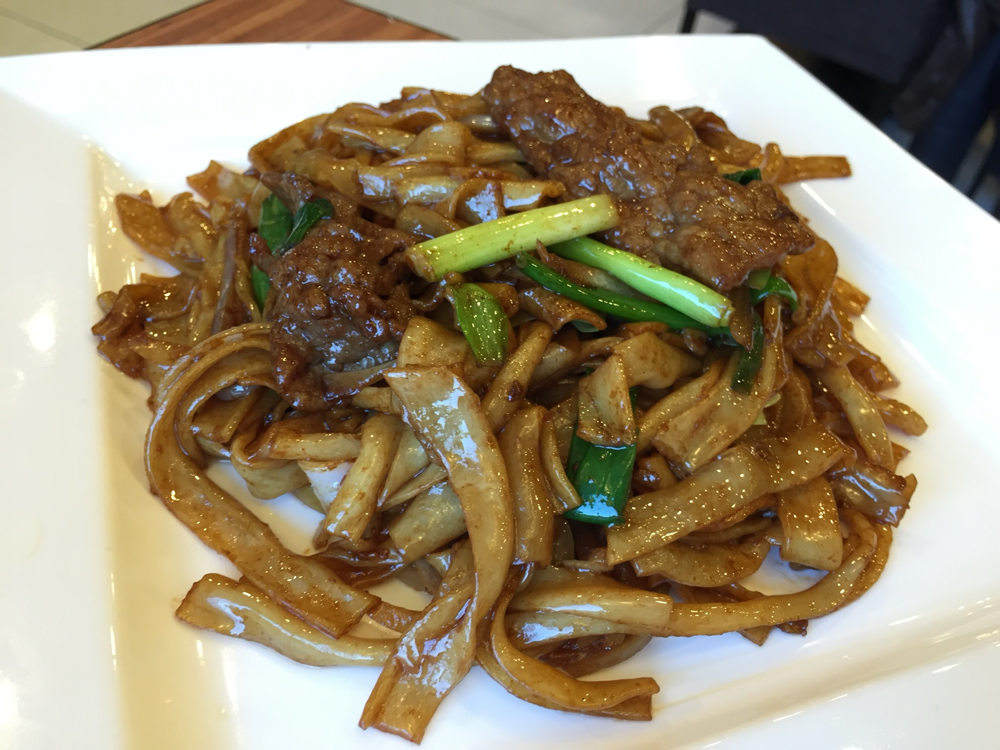
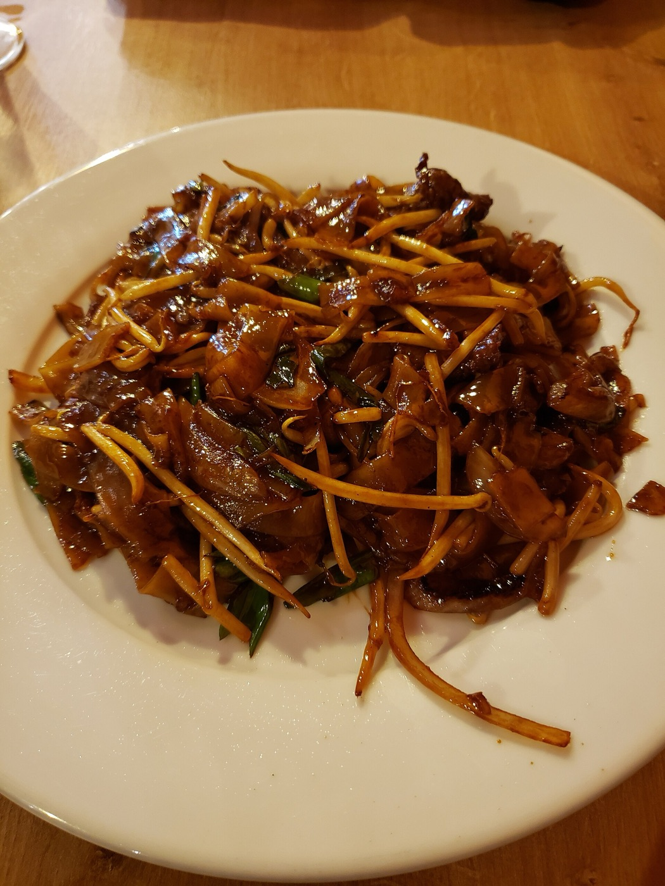
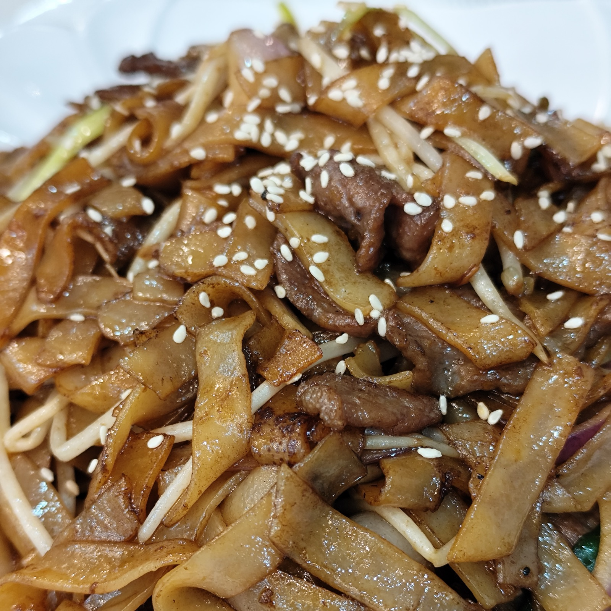
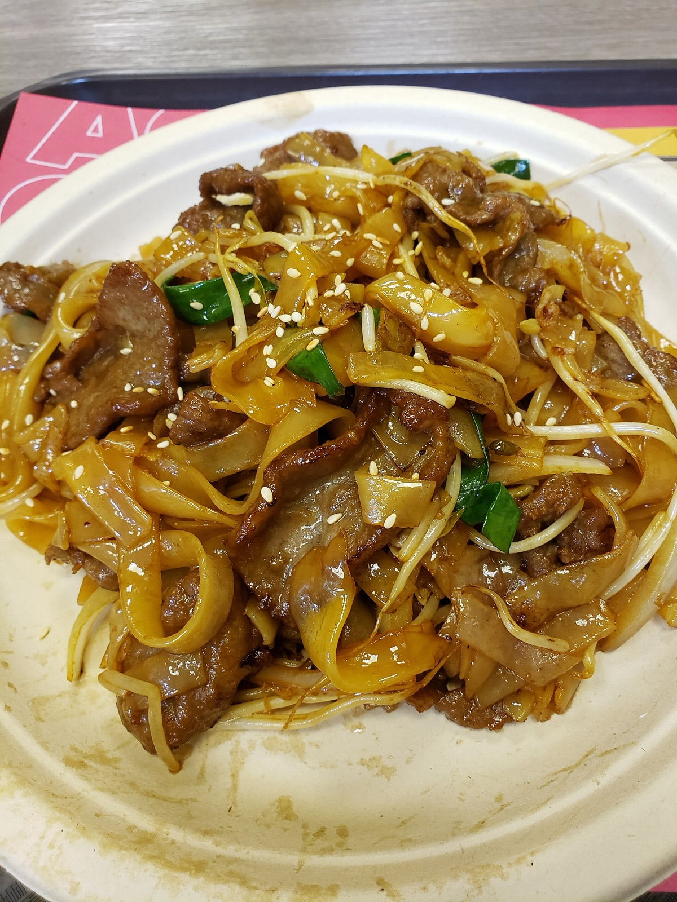
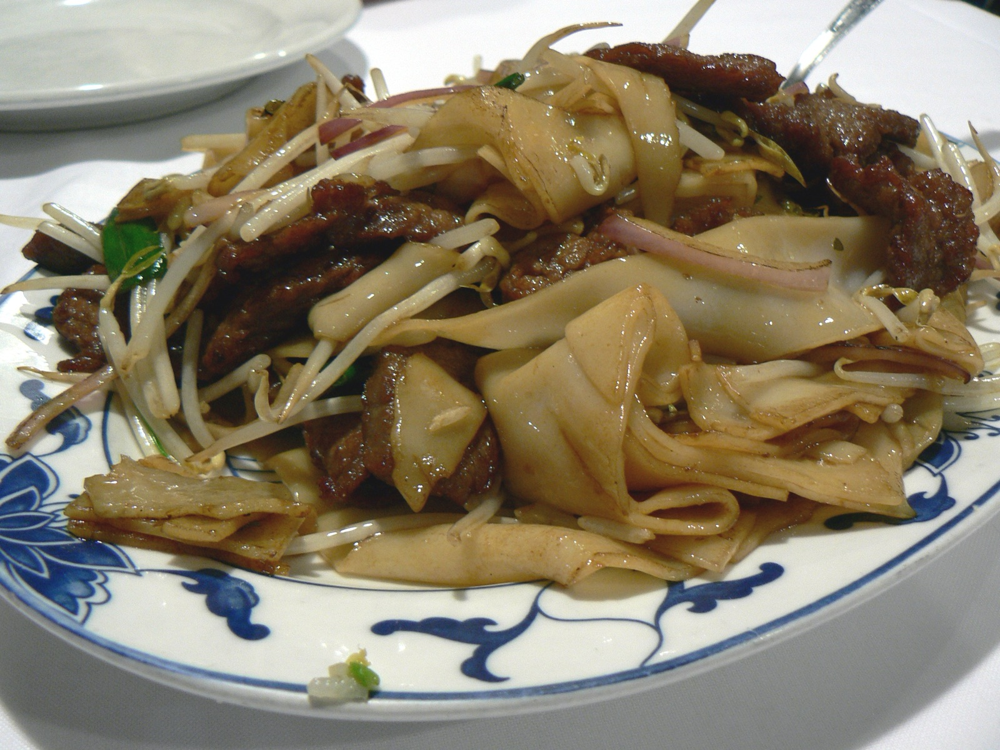
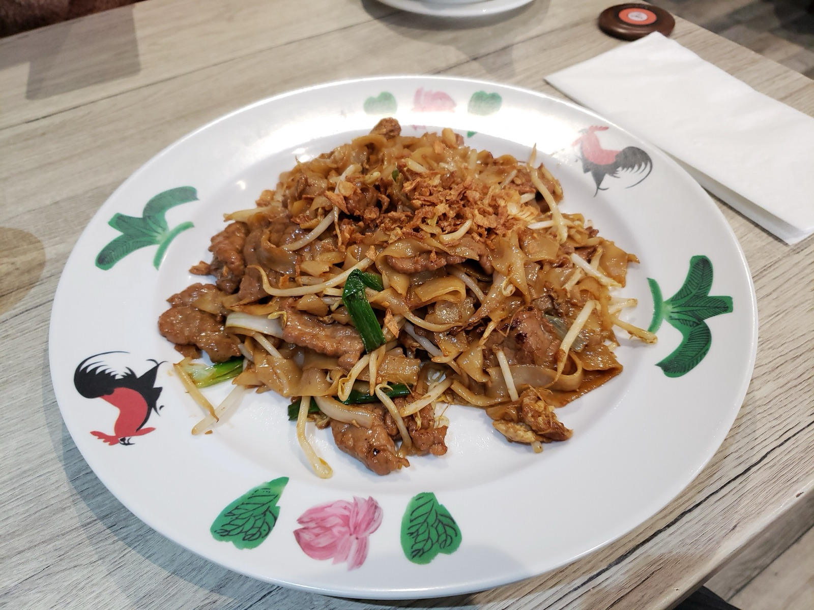
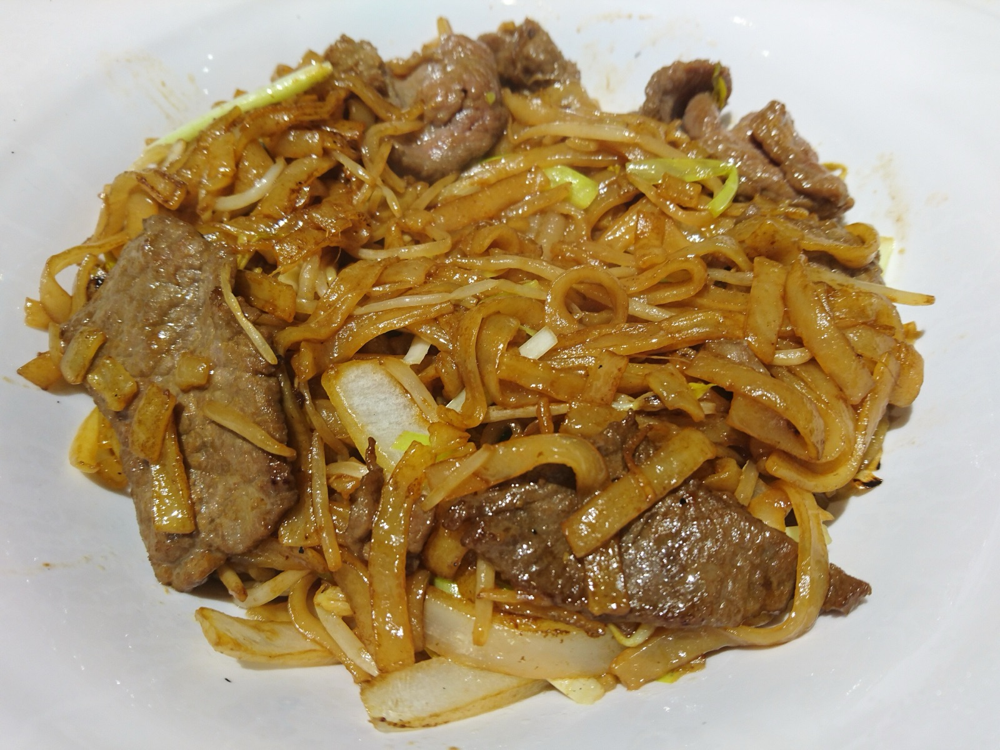
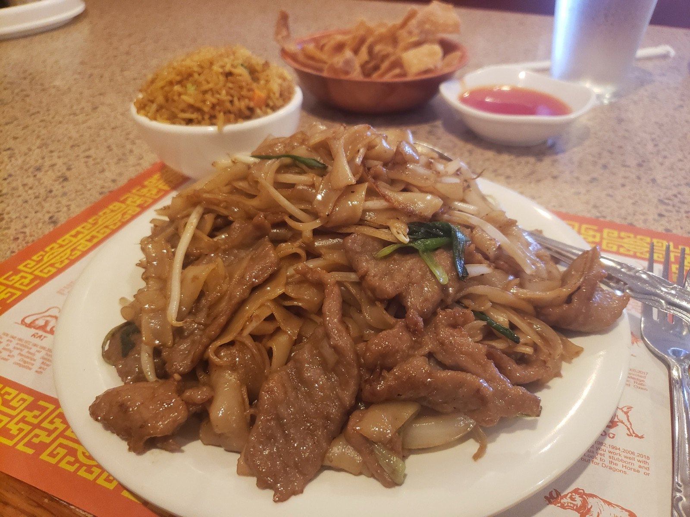
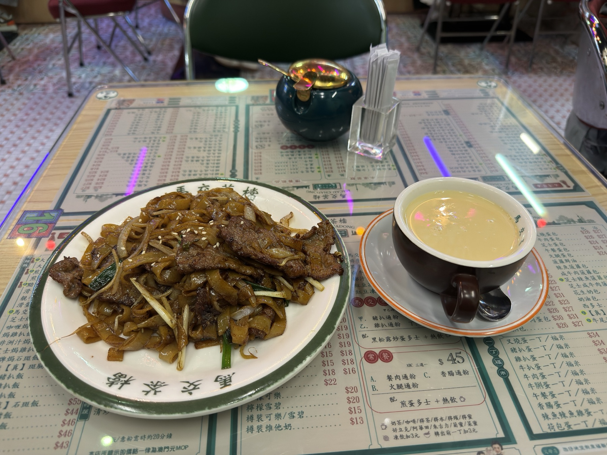
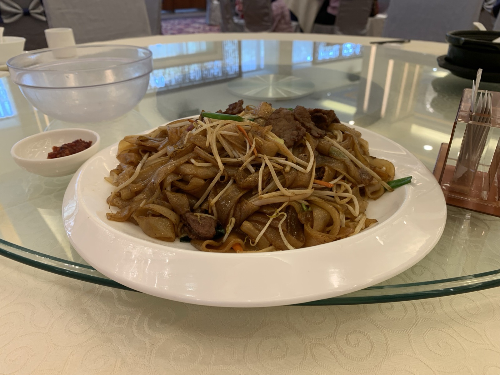

01
Ho Fun
河粉 · sa ho fun
Fresh wide rice noodles, cut in broad slippery sheets. Bought same-day and never refrigerated hard — cold makes them brittle, and brittle noodles snap the second they meet the wok.
乾 炒 牛 河
Slippery ribbons of ho fun hit a wok hot enough to warp steel. Thirty seconds later: charred edges, mahogany gloss, and a smoke you can taste. This is the dish Cantonese chefs use to judge a kitchen.
What you're looking at
Beef chow fun — 乾炒牛河, gōn cháau ngàuh hó — is a staple of Guangdong and Hong Kong: beef, wide rice noodles, bean sprouts and scallion, dry-fried over ferocious heat with soy sauce. The name says it plainly: dry-fried beef Shahe noodles.
No cornflour gravy pools at the bottom of the plate. Every drop of seasoning is absorbed into the noodle, which is exactly why it's so hard — too much liquid and the ribbons turn to porridge; too much stirring and they shred.
On paper it looks too simple to bother writing about. In practice it's the stir-fry that separates a good Cantonese kitchen from a great one. The cook's consensus

Anatomy of the plate
河粉 · sa ho fun
Fresh wide rice noodles, cut in broad slippery sheets. Bought same-day and never refrigerated hard — cold makes them brittle, and brittle noodles snap the second they meet the wok.
牛肉 · sliced thin
Flank or skirt, sliced against the grain and marinated with soy, Shaoxing wine, cornstarch and a whisper of baking soda. It sears in seconds and stays impossibly tender.
芽菜 · added last
They go in at the very end and leave still squeaking. That cold crunch against hot, yielding noodle is half the reason the dish works at all.
葱 · 洋葱
Cut into long batons so they wilt but never disappear. Sweet onion for body, green scallion for the fresh top note that cuts the soy.

鑊氣 · The breath of the wok
It's what happens when a carbon-steel wok gets hot enough that oil, soy and starch flash into aroma at the moment of contact. Faintly smoky, faintly sweet, gone within minutes of leaving the kitchen.
Which is why beef chow fun is a dish you eat immediately, standing up if you have to. Let it sit and you still have noodles — you just don't have this.
Plate after plate
From a Hong Kong cha chaan teng to a Chinatown lunch counter — every kitchen leaves its fingerprint on the char.








How it comes together
Everything is prepped and within arm's reach before the wok is lit. Once it starts, there is no pausing to chop.
Thin-sliced beef with soy, oyster sauce, Shaoxing wine, cornstarch and a pinch of baking soda. Thirty minutes, minimum.
Separate the fresh ho fun sheets by hand at room temperature. Cold noodles break; forced noodles tear.
Dry, then oil, until it just begins to smoke. Everything after this happens faster than you expect.
Spread in a single layer. Leave it alone until the underside browns, then out it comes — it finishes later.
Noodles flat against the metal, aromatics on top. Toss with a flipping motion, not a stir. Splash the soy down the hot side of the wok, never into the middle.
Beef back in, sprouts and scallion last, two tosses, plate. Serve while the smoke is still on it.
The one rule: cook in batches your pan can actually handle. A crowded wok steams, and steamed ho fun is soft grey mush — the single most common way this dish goes wrong at home.
Point at the menu, say it out loud, and don't let it cool on the way to the table.